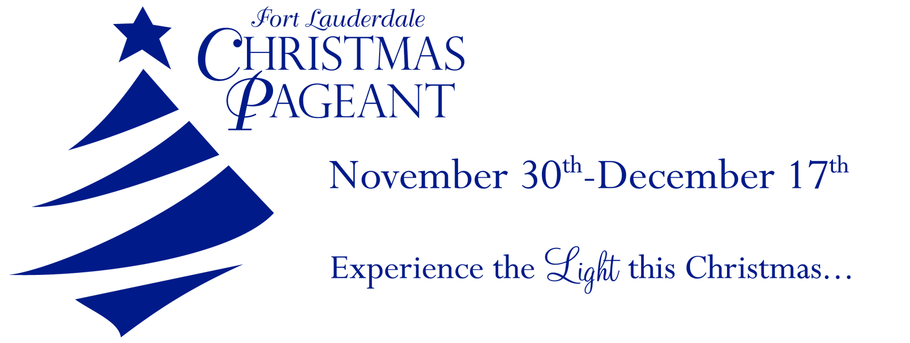

- Dining
- Tickets
- Parking
- Contact
- 
- FROM THE STREET CORNER TO THE CITY SQUARE, the sights and sounds of Christmas surround us during this wonderful season. We are especially delighted that you have chosen to make the Fort Lauderdale Christmas Pageant part of your holiday festivities!
MORE THAN THIRTY YEARS AGO, the Fort Lauderdale Christmas Pageant premiered for the very first time at a nearby civic auditorium. On our 10th Anniversary, we celebrated the opening of our current Auditorium, custom-designed for this annual presentation of the Christmas story. For our 20th Anniversary, we introduced a new grand Austrian Curtain and new settings for both acts of our program designed especially for this production by George and Goldberg. This design firm’s credits include the Winter Olympics Opening and Closing Ceremonies, the El Capitan Theatre, the Millennium Village at EPCOT, Super Bowl XXVI, and televised concerts. The stage was designed by Broadway designers Peter Wolf (“Peter Pan”) and Bill Eckart (“Cinderella”). The Silver Anniversary of the Christmas Pageant provided a time of reflection and expansion, with new flying effects, more original music and a cavalcade of new costumes.
THE FORT LAUDERDALE CHRISTMAS PAGEANT features a festive opening scene with familiar carols in a turn-of-the-century setting, a concert of inspirational contemporary songs, and a musical drama of the nativity and life of Christ.
ONE OF THE MOST CELEBRATED ASPECTS of the Pageant is the role played by young people, featuring hundreds of children and students from weeks-old babies (in the starring role!) to high school seniors who’ve been part of the Pageant all their lives. For example, a young violin prodigy who grew up in our church became a teenager virtuoso and served as concertmaster for our adult Pageant orchestra before beginning his service with the Marines. In previous years, our kids performed a specially composed "Lauderdilly Christmas" recorded at Disney studios. This original mini-musical was written for the Fort Lauderdale Christmas Pageant by composers David and Celeste Clydesdale. (The Clydesdales also wrote the new Walt Disney World Magic Kingdom parade, “Share a Dream Come True,” as well as the music which serenades the park during the fireworks finale over Cinderella’s Castle).
OUR COMMUNITY is an amazing international destination. More than seventy nations are represented in our church and we’ve joined together to present this production as a Christmas gift to you -- all in celebration of the greatest Gift ever given.
NOT TOO LONG AGO, First Baptist | FTL celebrated its Centennial Anniversary marking 100 years of worship and service in the center of South Florida and around the world. For more than 30 years, the Christmas Pageant has been an essential part of that centennial story.
EACH YEAR WE ARE TRULY HONORED and humbled that we have the privilege of portraying the timeless truths illustrated in the life of Jesus. The promise of two thousand years ago is realized again each time we tell the Christmas story. As morning rises over Bethlehem, a new hope arises in our hearts. Today, we celebrate that hope with you.